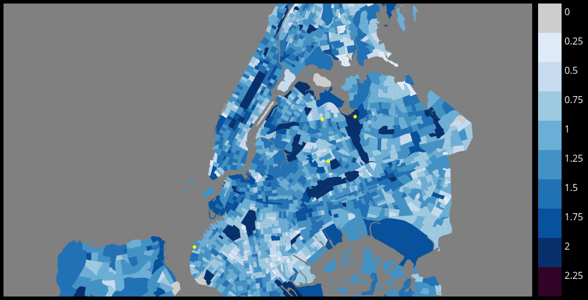

For our final project for Brown University's cs1951a: Introduction to Data Science, we chose to aggregate data relating to New York City's controversal practice of police searching citizens on the street without reason, widely known as "stop-and-frisk."
We analyzed and visualized NY stop-and-frisk data to illuminate patterns and correlations between events across different factors and times.
The stop-and-frisk dataset is rich, comprehensive, and contains over 5 million individual stop-and-frisk incidents from 2002 to 2014, in CSV format. We focused on the data from 2006-2014 (comprising of 4,157,770 data points) because during this period, the exact location of the stop was available, allowing us to create fine-grained visualizations. This location data is stored in NY state coordinates, which had to be converted to be usable with our other data (using methods described below). This dataset required more cleaning than originally thought, as upon further inspection, some values were missing or unrealistic.
The census data provided fine-grained location information, splitting New York into 2,168 individual census tracts.
Census data was divided into separate tables for race, age, and sex.
This data was used to determine the income for each census tract.
ogr2ogr is a useful program which facilitates the conversion of one coordinate system into another.
This was used to provide ogr2ogr with the necessary projection to convert New York state coordinates into latitude/longitude, enabling it to be used with our other data and visualization system.
This database provides police complaints by precinct from 2003-2013. We converted precinct information to census tract using multiple conversion files.
We used logistic regression on our input data to give the most viable prediction of chance of stop-and-frisk given a set of input characteristics chosen by the user. Dates are separated by month so that there will be a sufficient number of stop-and-frisk incidents for the classifier to create accurate inferences, while still retaining the ability to analyze a relatively fine-grained period of time. Age is treated as a vector, allowing for general trends to become prominent without overfitting to the specific ages of the people who were stopped in a narrow range of time, given that age can vary across a large range.
If a feature is unspecified,the classifier is prompted to average out the probabilities of all values for that feature. Thus, if no features are selected, then the
The goal with our web application was to bring a new dimension from the data by allowing users to interact with the classifier. Results have more impact if they can be connected to a person's own life - if you were walking down the streets of New York, would you be profiled?
Our web application consists of a series of dropdown options to select input characteristics, a map, a date slider to select any month in the range of 2006-2014, selectable press release summaries, and a timeline.
The available drop down options are sex, age, and race. All 3 must be selected before the rest of the page is updated.
We used d3 to display a GeoJSON file of New York City and the surrounding areas divided by census tracts. This map can be panned by clicking and dragging, and zoomed in on with the scroll wheel.
The date slider is used to select the point in time for the map to display the likelihood of being stopped and frisked at each census tract.
Press releases are displayed in small circles directly above the timeline. Police are not conducting stop-and-frisks in a vacuum - the location of the press releases provides context for the fluctionations in searches. This allows the data to begin to tell a story.
Users can hover over the press release circles to gain more information about what it is about. Each press release contains a headline and description. Clicking on the press release will take the user to a relevant article about the event so that they can delve deeper on the course of events.
We used d3 to create a timeline with one static white line repesenting the total number of stop-and-frisks which happened each day over time. The second blue line dynamically responds to the selected characteristics, showing how the chance of being stopped and frisked changes over time. This timeline lines up with the time slider, allowing the user to easily jump to points they might find interesting.
One difficult challenge was figuring out how to apply machine learning techniques to a dataset with only positive samples. That is, in standard supervised machine learning algorithms, it is assumed that you have samples labeled as both the "positive" and "negative" classes. However, in considering the probability of being stopped or not, we only had direct access to positive data. Though the NYPD stop-and-frisk dataset has an extensive set of features, the exact relationship between these features and the general population is unknown.
After researching approaches to similar problems (such as recommendation engines where only "liked" data is known), we decided to generate samples to approximate realistic negative data. We used various data from New York City's censys to generate representative negative samples. Unfortunately, census data is limited. Tables are seperate for race and age/sex, for example, and there are no tables for many of the features we origionally intended to examine. In addition, the census data was formatted completely differently, down to how each census tract was identified. When our picture remained incomplete, we assumed independence between the features of age/sex and gender.
Our location data was coming from multiple sources in multiple formats, and needed to be made compatible with our visualization setup. We had originally assumed that the NYPD stop-and-frisk database was in latitude/longitude format - this was not the case. We had to normalize the location and quantile data, sending it through a TIGER shapefile, ogr2ogr, GeoJSON, TopoJSON, SVG, and Latitude/Longitude.
With several million points of data within our stop-and-frisk database contributing to an interactive classification and visualization and being sent to and from the browser, performance was key.
The following table was created by averaging out the likelihoods for adults (ages 18-60) on 10 random dates from every year in 2006-2014.
| Race/Sex | Female | Male |
|---|---|---|
| Black | 0.619 | 2.652 |
| White | 0.108 | 0.910 |
| Hispanic | 0.291 | 1.782 |
| Other | 0.122 | 0.998 |
After the user interacts with the drop down options, the map will automatically be populated with a variety of related information.
Individual census tracts will be colored to reflect the likelihood with which an individual with the selected characteristics would be stopped and frisked by an officer in relation to the average person, in the month selected on the timeline below. The darker the color, the more likely a stop, as shown by the key to the right of the map.
Users can explore individual census tracts by hovering over them, which will bring up a tooltip explaining where the tract is, what the exact likelihood is, the average income of the tract, the number of stop and frisk complaints against NYPD for that year, and the racial distribution of the tract. They can also click to zoom in and focus on the tract.
Actual stop and frisk incidents from the NYPD database in the selected month will be displayed on the map in the form of dots. Red dots represent an arrest, and yellow dots represent a stop that did not lead to an arrest.
We narrowed down our features to age, sex, race and location. The decision to remove height, weight, build, and hair/eye color was made due to the lack of negative sample data. The average values for these features could certainly be found and assumed independant across the entire New York population, but we felt this would be too far of a misrepresentation, detracting from the overall purpose of our web application which is so tied to identity.
We realize we were highly optimistic, thinking that we would have time to integrate Twitter sentiment to hit our 125% goal.
Our timeline ended up being being inaccurate in a variety of ways. Some aspects of the project, such as the heatmap of stop-and-frisks, could not be begun until much later, due to unforseen difficulties in coordinates. We did not realize how much data wrangling would have to be done until it could be used in some useful way, despite believing ourselves to be good, cautious data scientists.
Because of these holdups, other members of the group began completing other, independant portions of the project. These sections, such as timeline information, were integrated quite early despite initially being planned for the end.
Alexa Van Hattum login: avanhatt focus: data cleaning & machine learning
Eden Weizman login: eweizman focus: front end developement
Samuel Kortchmar login: skortchm focus: app framework & visualizations
Wenyi Lu login: wl58 focus: SQL database